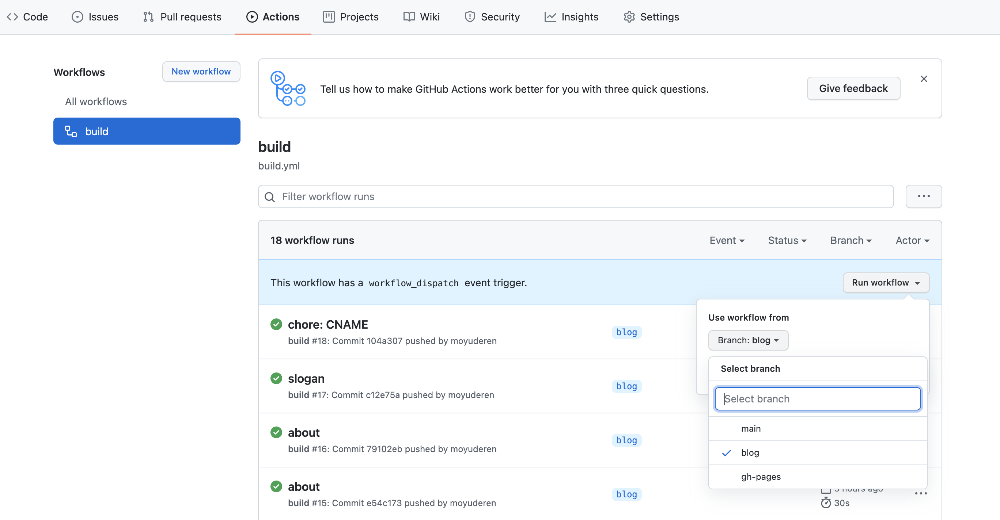
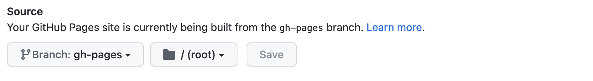
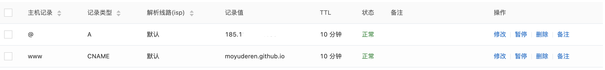
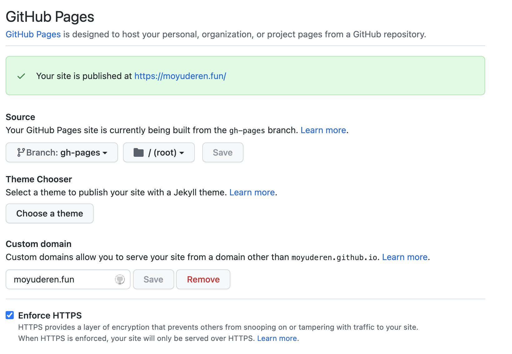

搭建博客记录
本文最后更新于：2021-12-02 05:53:08
准备工作
Hexo官网
- 按照文档操作即可 (生成一个blog工程)
github
- 注册一个github账号（大家应该人手多个了-。-|||）
- 创建一个新的仓库命名为
youUserName.github.io - 把blog工程和
youUserName.github.io远端仓库关联
github-pages（只有仓库是public状态才能免费使用）
创建一个action
新建.github/workflows/build.yml文件，如下：（用于执行action）
1
2
3
4
5
6
7
8
9
10
11
12
13
14
15
16
17
18
19
20
21
22
23
24
25
26
27
28
29
30
31
32
33
34
35
36
37
38
39
40
41
42# This is a basic workflow to help you get started with Actions
name: build
# Controls when the workflow will run
on:
# Triggers the workflow on push or pull request events but only for the blog branch
push:
branches: [ blog ]
pull_request:
branches: [ blog ]
# Allows you to run this workflow manually from the Actions tab
workflow_dispatch:
# A workflow run is made up of one or more jobs that can run sequentially or in parallel
jobs:
# This workflow contains a single job called "build"
build-and-deploy:
# The type of runner that the job will run on
runs-on: ubuntu-latest
# Steps represent a sequence of tasks that will be executed as part of the job
steps:
# Checks-out your repository under $GITHUB_WORKSPACE, so your job can access it
- name: Checkout 🛎️
uses: actions/checkout@v2.3.1
- name: Install and Build 🔧 # This example project is built using npm and outputs the result to the 'build' folder. Replace with the commands required to build your project, or remove this step entirely if your site is pre-built.
run: |
npm install
npm run build
- name: Deploy 🚀
# https://github.com/JamesIves/github-pages-deploy-action/tree/dev#using-an-ssh-deploy-key-
uses: JamesIves/github-pages-deploy-action@4.1.5
with:
# https://github.com/JamesIves/github-pages-deploy-action/discussions/627
# token: ${{ secrets.ACCESS_TOKEN }}
branch: gh-pages # The branch the action should deploy to.
folder: public # The folder the action should deploy.
commit-message: docs 更新文档
clean: true执行在blog(或者任意分支)执行action；如图

action构建完成会自动生成gh-pages分支，并且把构建结果提交到该分支
进入
Settings页面，找到Pages选项，完成以下设置
把gh-pages跟目录下的打包结果作为页面展示稍等一会github就可以用
https://yourUserName.github.io展示
绑定自定义域名
购买一个域名（我用的阿里云，买最便宜的域名）
设置解析域名如下：

- A 对应ip是通过
ping yourUserName.github.io获得的 ipv4 - CNAME 对应
yourUserName.github.io
- A 对应ip是通过
进入github
yourUserName.github.io工程Settings页面，找到Pages选项
- 等待一会就可以在自己的域名访问了
- 配置好之后github会在
gh-pages分支下自动生成CNAME文件（moyuderen.fun） - 该工程配置好之后，别的工程路由无需配置就可自动访问 eg:
https://moyuderen.fun/chanzhongshuochan
配置
主题
该博客使用的是fluid主题
本博客所有文章除特别声明外，均采用 CC BY-SA 4.0 协议 ，转载请注明出处！